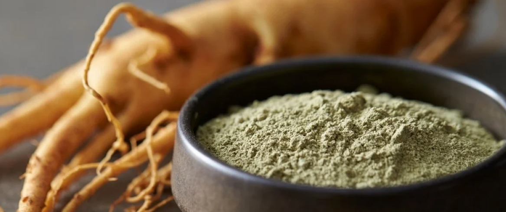
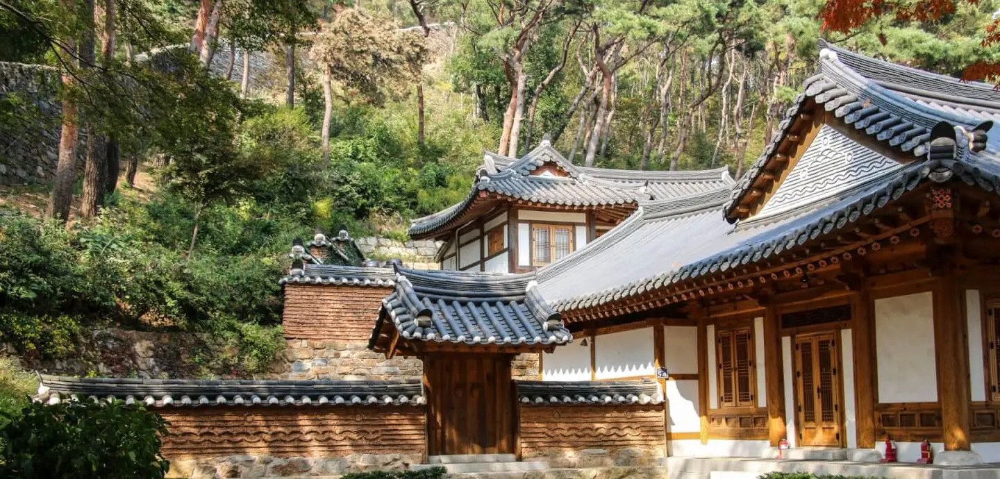
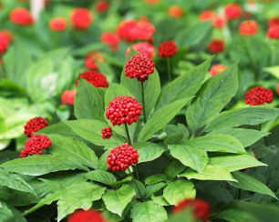
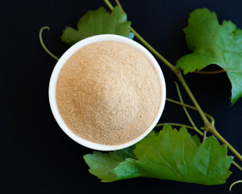
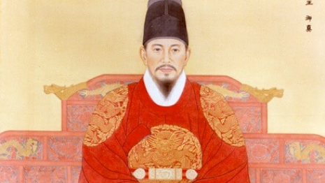

Panax Ginseng
La radice della vita: vigore, resistenza e forza vitale

Il Ginseng (Panax Ginseng) è la "radice della vita" dell'Asia orientale. A differenza dei tè, si tratta di una radice carnosa che richiede anni di maturazione nel terreno prima di poter essere raccolta e ridotta in polvere. La versione Panax è la più pregiata: il termine "Panax" deriva dal greco e significa "panacea", ovvero un rimedio per tutti i mali. In polvere, si presenta con un colore beige-dorato e un sapore unico: terroso, leggermente amaro ma con un retrogusto dolce e legnoso.
Il cuore della produzione mondiale è la Corea del Sud, dove il clima e la composizione del suolo permettono alla radice di sviluppare la massima concentrazione di principi attivi. principalmente coltivato in piantagioni di montagna, come nell'Isola di Ganghwado,

Le zone di produzione offrono condizioni climatiche umide e piovose, ideali per la crescita della radice, raccolta dopo 4-6 anni. La lavorazione determina il prodotto finale: il Ginseng Bianco viene essiccato al sole, mentre il Ginseng Rosso Coreano subisce una vaporizzazione che ne intensifica il colore e le proprietà, rendendolo la varietà più pregiata sul mercato.



L'uso del Ginseng risale a oltre 5.000 anni fa nelle montagne della Manciuria e della Corea. Inizialmente veniva usato solo come cibo, ma presto divenne una risorsa strategica: nell'antica Corea, il Ginseng era così prezioso da essere usato come moneta di scambio e tributo per gli imperatori cinesi. Per secoli, la raccolta del Ginseng selvatico era un rito sacro, e i raccoglitori pregavano gli spiriti della montagna prima di estrarre le radici, che spesso assumevano forme umane (da qui il nome Jen-shen, "radice dell'uomo").
Il Ginseng è il re degli "adattogeni", sostanze che aiutano il corpo a resistere allo stress: